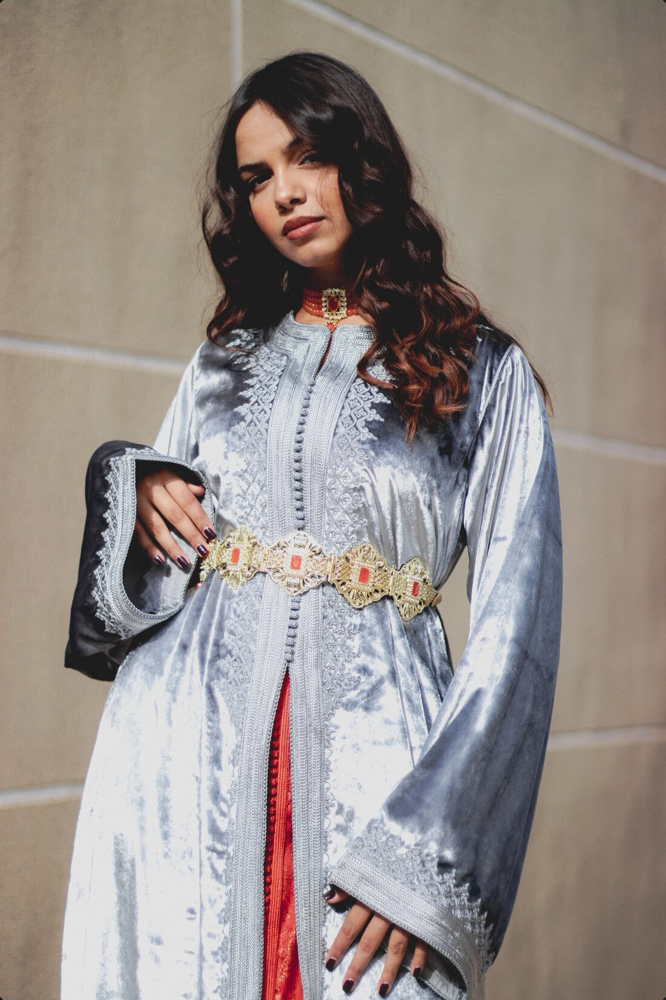
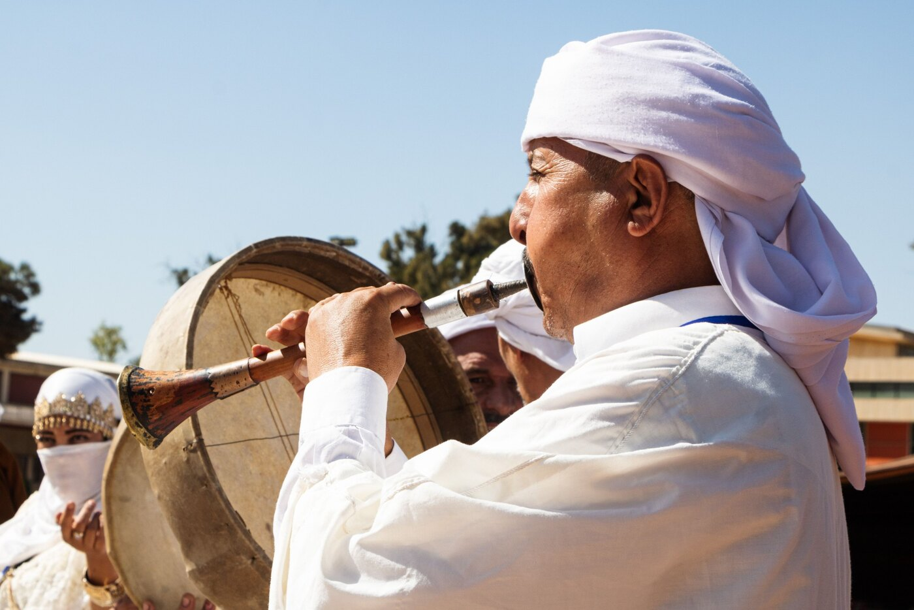

Votre prochaine
tenue de fête
est déjà dans
l'armoire
d'une autre.
Louez-la,
près de chez vous.
Partout
en Belgique.
L
LALLAT
Location de tenues marocaines
C'est pour qui ?
Invitées
Louez la tenuede vos rêves.
Mariage, henné, fiançailles, Aïd.
Particulières · Negafas · Créatrices
Mettez vos tenuesen location.
Un revenu en plus, en toute sécurité.
Prestataires · Matériel
Faites-vousréserver.
Henné, maquillage, photo, musique, sono.


Henné
Maquillage
Photo
Musique
Sono
Prélancement
Lesinscriptions
sontouvertes.
Créez votre compte dès aujourd'hui.
Inscription gratuite
Invitée · Fournisseuse · Prestataire
LALLAT
Créer un compte
Je souhaite
Louer des tenues
Proposer mes tenues
Référencer mon activité
Créer mon compte
Bienvenue !